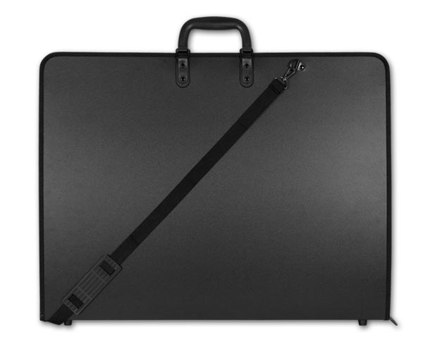
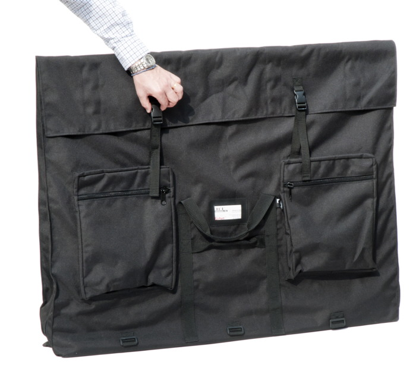

Art Portfolio Cases
Plastic Portfolio Cases

Carry your artwork or supplies in style with the Art One Portfolio and Carrying Case! This sturdy portfolio is made of lightweight polypropylene material and features a strong nylon two-way zipper. One side of the interior has an "X" strap to hold projects and artworks. A full-length pocket on the other side holds pads, presentation materials, and other flat gear. The one-inch wide gusset can hold supplies or finished art. The bottom of the case is protected by small plastic button feet. The double reinforced handle allows you to comfortably carry heavy loads and the adjustable shoulder strap is perfect for hands-free use.
Portfolio cases with pockets!
Like our smaller portfolios, our oversized portfolios open from the top and expand to six inches of depth -- enough capacity to hold 25 foam boards or several pieces of framed artwork! These larger portfolio bags feature two side handles for people of various heights. Due to their large size, they come folded for compact shipping and storage. Add your own foam boards in the side compartments to stiffen. Additional features include side zippers for flat loading and presentations, two outside pockets, business card holder, and an adjustable shoulder strap with all metal hardware. Same rugged water-resistant 600-denier polyester construction and two-year warranty as our smaller portfolios.


(567)661-0294
anthonykalell@gmail.com